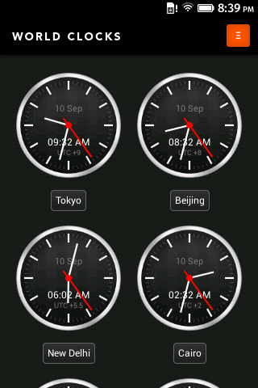
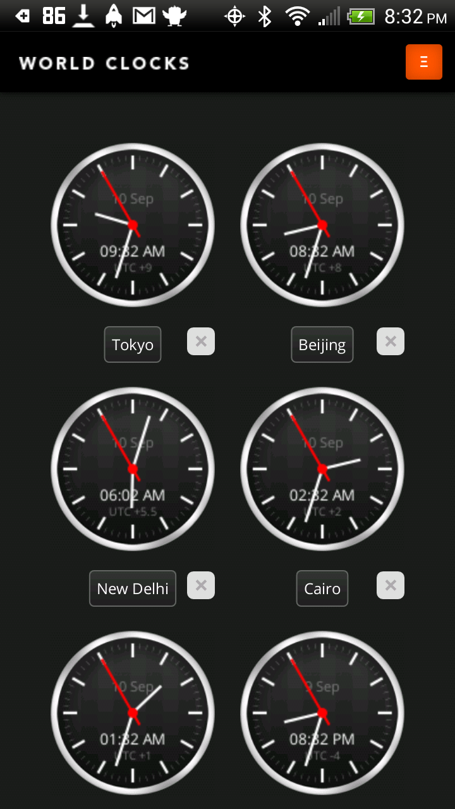
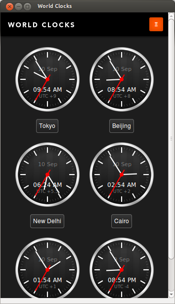
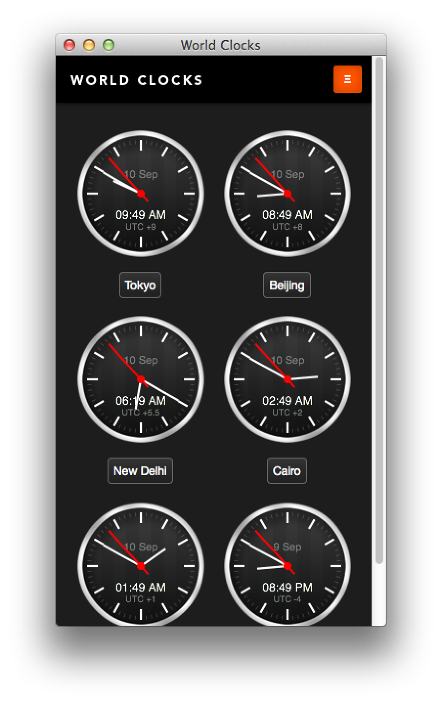

Firefox OS
A look at Mozilla's OS for the Open Web

Who am I?
Hi there.
les orchard
me@lmorchard.com
{web,mad,computer} scientist;
{tech,scifi} writer;
home{brew,roast}er;
mozillian
What is Firefox OS?
- Mozilla's open source OS for the Open Web
First, there was Boot2Gecko

Announced in July 2011.
Have you ever wanted to boot straight into Emacs?
We built a Linux distro that boots into Gecko, the engine behind Firefox.
And, from there, Gecko runs the Web.
Gonk, Gecko, and Gaia
There's more to an OS than just a browser.
Gonk - Linux kernel and HAL
Gecko - Web run-time engine from Firefox
Gaia - User interface, written in HTML / CSS / JS
Gonk, Gecko, and Gaia

Gonk, Gecko, and Gaia
A very small Linux distro that borrows from the
Android Open Source Project
Shares some drivers, hardware abstractions, and dev tools with
Android
Generally runs on the same hardware as Android (with some coaxing)
Does not run Android apps
Gonk, Gecko, and Gaia
The b2g executable into which Gonk boots.
The guts of Firefox stripped down to a runtime.
Renders HTML & CSS, executes JavaScript.
Provides WebAPIs
through which JavaScript can access Gonk services.
Gonk, Gecko, and Gaia

Written entirely in HTML, CSS, & JS using Web APIs
Home screen & general app management
Status bar & notifications
Bundle of built-in apps - e.g. Browser, Calendar, Phone, etc
RED PANDA BREAK!
Did you know? Firefox was named for the Red Panda.

Open Web Apps
Basically, an Open Web App is a web page.
But, web pages aren't (just) what they used to be.

Open Web Apps
HTML5 introduces new APIs for media, graphics, storage, geolocation, offline
access, etc.
- Yes, apps can work without a net connection
New WebAPIs proposed as public standards.
- Provide access to Gonk hardware services like battery, vibration, bluetooth, SMS, etc.
Web is the New Native
Write once, run everywhere a whole bunch of places
Everything is an Open Web App using the Gecko web runtime.
Again, b2g is the one and only "native" executable.
If you really, really need to compile C code - consider
asm.js and
emscripten
Developing for Firefox OS
So, Firefox OS apps are "just" Open Web Apps.
And Open Web Apps are "just" web pages.
Use whatever JavaScript framework you'd like (e.g. jQuery, YUI, Dojo, Enyo,
etc)
Adapt your current web site to work better on a variety of small, medium, &
large screens
Developing for Firefox OS


Developing for Firefox OS


Developing for Firefox OS

Publishing Apps
Firefox Marketplace implements the Open Web Apps publishing scheme:
TL;DR: You can run your own "marketplace", even if it's just a page with
install buttons for your own apps.
Publishing Apps
Sample manifest.webapp:
{
"version": "0.1",
"name": "Area Tweet",
"description": "Find tweets by for any location",
"icons": {
"48": "http://areatweet.com/images/icon-48.png",
"128": "http://areatweet.com/images/icon-128.png"
},
"developer": {
"name": "David Walsh",
"url": "http://areatweet.com"
},
"installs_allowed_from": [
"http://areatweet.com",
"https://marketplace.firefox.com"
],
"default_locale": "en"
}
Publishing Apps
Sample App installation code:
var MANIFEST_URL ='https://myapp.example.com/manifest.webapp';
var installApp = navigator.mozApps.install(MANIFEST_URL);
// Successful install
installApp.onsuccess = function(data) {
console.log("Success, app installed!");
};
// Install failed
installApp.onerror = function() {
console.log("Install failed\n\n:" + installApp.error.name);
};
Publishing Apps
- By the way, Open Web Apps can also be installed via Firefox for Android and
Desktop (Nightly)


Publishing Apps
- By the way, Open Web Apps can also be installed via Firefox for Android and
Desktop (Nightly)




The End (also: FENNEC BREAK!)
Did you know? Firefox for Mobile was codenamed "Fennec" for the desert fox.